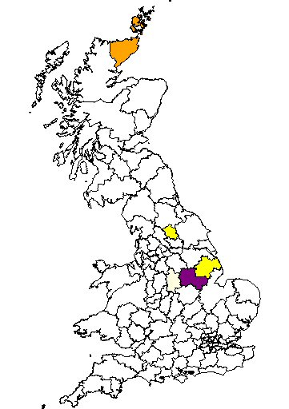

John Keetley was born in Nottingham in 1801, the son of John and Mary Keetley. He married Hannah and they had four children. By 1841 they were living at Tyler Street, Nottingham.

John was described as a labourer and Hannah a seamer in the textile industry. Their son Christopher was born in Nottingham in 1832 and by the age of 18 was working as a foundryman. In 1853 Christopher married Elizabeth Burton, daughter of William Burton, a framework knitter. By 1861 Christopher and Elizabeth were living in Commerce Street, Nottingham with Christopher's parents. Christopher and Elizabeth had eight children between 1854 and 1868 and in 1871 were living at Kings Place.
In 1871 Clara is recorded as 10 years old and her occupation described as "Cotton Factory and school half time". Within ten years Clara had two illegitimate children, the first being Mary Ann Keetley when she was just 17, the second Elizabeth, two years later. In 1881 Clara married William Bunting. It is possible that William was the father of thefirst two children as he was living at the same address as Mary Ann at the time.
Clara's father Christopher died at New Basford Workhouse in 1899. This was accommodated in an old factory in Beech Avenue, whilst the Union was awaiting the completion of Bagthorpe Workhouse.Clara lived on to the grand old age of 92.
Current Research : No current research into this family line.
Click here for full details of our Keetley ancestry
October 8, 2011